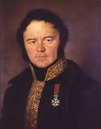

Marie - Henri Beyle Stendhal
23 Ocak 1783’te Fransa’nın Grenoble şehrinde doğdu. Yedi yaşındayken annesini kaybedince babası
ve halasıyla yaşamaya başladı. École Centrale’in matematik bölümünden birincilikle
mezun olduktan sonra kuzeninin yardımıyla Harbiye Bakanlığı’nda göreve başladı.
Asteğmen olarak İtalya’ya gitti. Askerliğe ısınamayıp bir süre Paris’te başıboş
bir hayat yaşadı. Daha sonra Marsilya’da tacirlik, ithalat gibi işlerle meşgul oldu.
Marsilya’dan sonra Paris’e dönüp levazım dairesinde işe başladı. Napoléon’un zafer
alayıyla Berlin’e gitti. 1810 yılında sürveyanlığa yükselerek saraya takdim edildi.
Polonya, Floransa, Roma, Napoli’yi gezdi. Napoléon’un Büyük Ordusu’yla Moskova’ya gitti.
Moskova’nın yanışı ve Büyük Ordu’nun çekilişinden çok etkilendi. Bautzen Savaşları’na
katıldı. 1830’da Trieste’ye, 1831’de Roma’nın kuzeyindeki Civitaveccia’ya konsolos tayin
edildi. 1834’te Légion d’honneur nişanına layık görüldü. Bir yandan görevi gereği
Avrupa’da dolaşırken, bir yandan da edebiyatla ilgilenmeye devam etti. 1815’te
Vies de Haydn, de Mozart et de Métastase’ı (Haydn, Mozart ve Metastasio’nun Hayatları)
yazdı. Stendhal mahlasını kullandığı ilk kitabı olan Rome, Naples et Florence’ı (Roma,
Napoli ve Floransa) 1817’de yayımladı. Napoléon’un hayatını yazmaya başladı. 1819’da
babasının ölümünden sonra Grenoble’a dönerek burada karşılıksız aşkı Mathilde Dembowski’ye
ithaf ettiği Aşka Dair’i yazdı. 1823’te Romantik akımın ilkelerini ilan eden ve daha sonra
Racine et Shakespeare (Racine ve Shakespeare) adıyla birleşecek olan iki eserden ilkini
kaleme aldı. Vie de Rossini’yi (Rossini’nin Hayatı) yayımladı. 1827’de ilk romanı olan
Restorasyon dönemi hikâyesi Armance’ı yayımladı. 1829’da İtalya’daki tecrübelerini aktardığı
Roma’da Gezintiler kitabını yazdı. Ekim ayında Kırmızı ve Siyah’ı yazmaya başladı.
Kırmızı ve Siyah 1831 tarihini taşısa da aslında 1830’da yayımlandı. 1834’de yarıda
bırakacağı Lucien Leuwen’i yazmaya başladı. Kendi hayat macerasını anlatan Henry Brulard’ın
Yaşamı’nı yazmaya başladı, fakat tamamlamadı. 1836’da Mémoires d’un touriste
(Bir Turistin Hatıraları) adını taşıyan seyahat kitabını yayımladı. Le rose et le vert
(Pembe ve Yeşil) adında tamamlayamayacağı bir romana başladı. 1838’de Parma Dükü
Alexandre Farnèse’in gençlik hayatından esinlenerek roman haline getirdiği Parma
Manastırı’nı yazdı. 1839’da Lamiel adlı romanı yazmaya başladı ancak bitiremedi.
1841 yılında sağlığı bozulmaya başladı. 22 Mart 1842’de felç geçirdikten bir gün
sonra hayatını kaybetti.